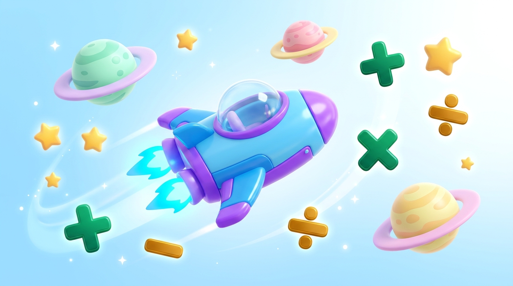

rocket_launch
Clic aquí para jugar Operaciones
Entrar →
Cálculo Mental
Tablas · Sumas · Restas · Divisiones
Guerra Galáctica de las Tablas
Practica y domina las tablas de multiplicar y operaciones básicas defendiendo estaciones espaciales y guardando tu puntuación.